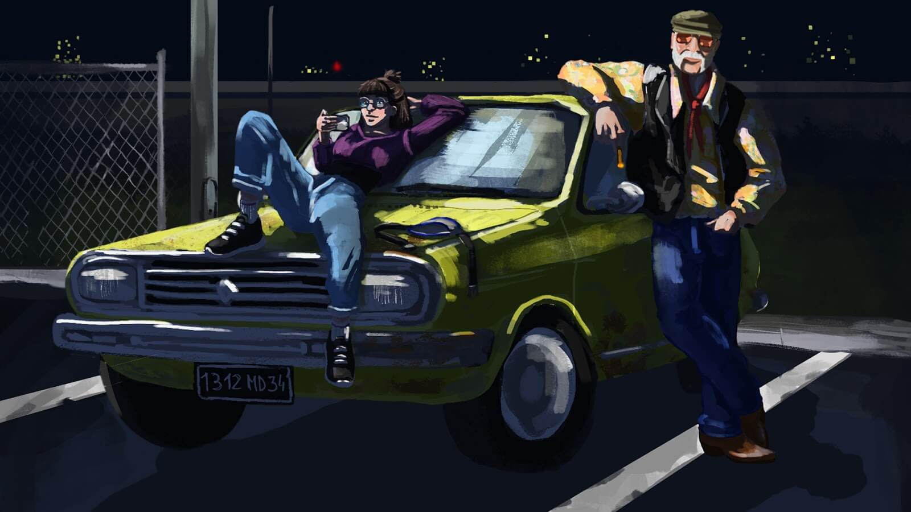
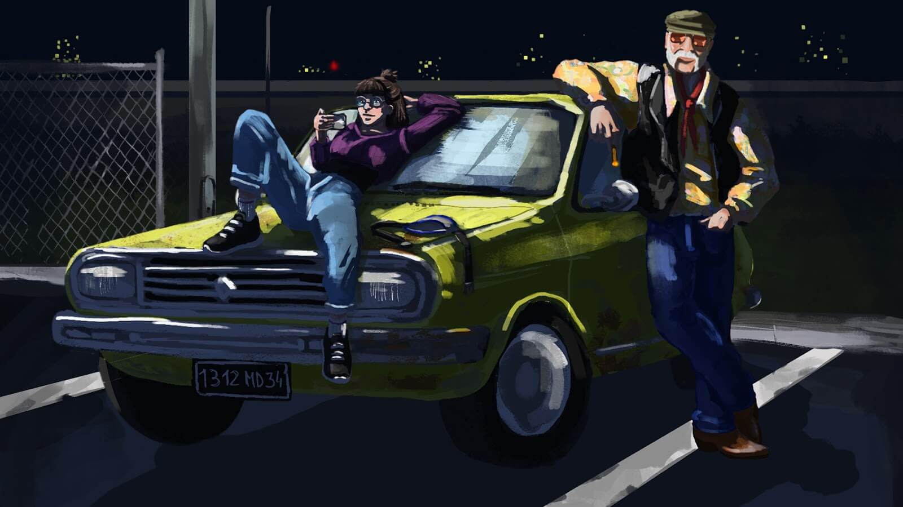

Les radios libres sont en danger
Dans un futur proche, les autorités cessent de réguler les ondes. Certaines grandes radios payent des brouilleurs pour gagner du terrain.
Franck, un ancien animateur de l'époque des radios pirates, est sorti de sa retraite par Marion, une jeune ingénieure du son passionnée.
Ensemble, ils essaieront de rétablir l'ordre et de montrer au monde l'importance des radios libres.
 


Explorez
Baladez-vous et faites des courses en voiture dans la ville de Montpellier
Découvrez
Découvrez l'histoire et l'univers des radios libres et associatives en Occitanie
Diffusez
Faites redécouvrir au monde l'importance et l'expression des radios libres et combattez le monopole des brouilleurs
Un projet culturel
Radio Rebelote est un projet culturel financé par la région Occitanie, en partenariat avec la formation LP Jeu Vidéo de l'Université Paul-Valéry de Montpellier.
Il a été développé sur une période de 3 mois par une équipe de 5 étudiants.